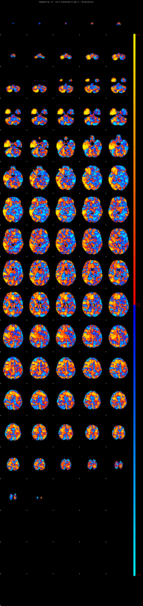
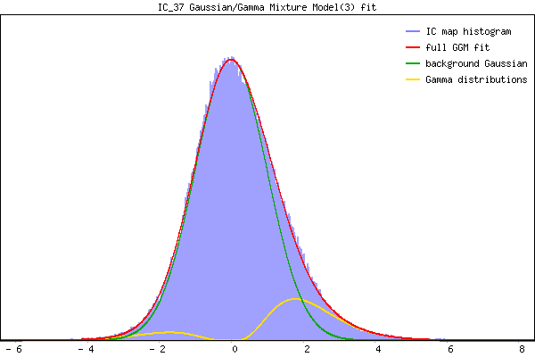

Component 37 Mixture Model fit



IC_37 Mixture Model fit
Means : 0.000000 2.226240 -2.118977
Vars : 1.000000 0.986405 0.884006
Prop. : 0.863010 0.115544 0.021446
This page produced automatically by MELODIC Version 3.15 - a part of FSL - FMRIB Software Library.